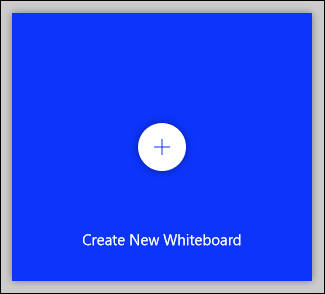

După ce ați descărca și a deschide aplicația Whiteboard, trebuie doar să fac față clic pe „Create New Whiteboard” pentru a începe.

Se va deschide un nou tablou gol, veți vedea cele cinci controale afișate în imaginea de mai jos.
1. Te readuce la pagina de început, unde poți să schimbi la alte plăci sau să creezi altele noi.
2. Vă arată opțiunile de partajare pentru bord.
3. Te duce la detaliile contului, unde poți să te deconectezi sau să treci la un alt cont.
4. Deschide setările aplicației Whiteboard.
5. Deschide instrumentele de creare.
Pentru a începe, faceți clic pe instrumentul Inking din stânga. Bara de instrumente va afișa acum instrumentele Inking (sau pixuri, pentru tine și pentru mine).
Există șase instrumente, prezentate în imaginea de mai jos.
Iată ce fac fiecare dintre aceste instrumente:
2. Închide instrumentele Inking.
2. Stilourile pe care le puteți folosi pentru a desena pe tablă.
3. Instrumentul Eraser.
4. O riglă pentru desenarea liniilor drepte în orice unghi.
5. Un instrument Lasso pentru selectarea elementelor de pe placă.
6. Acțiunile Anulare și refac.
Faceți clic pe un stilou pentru a începe să desenați sau să scrieți pe placă. Dacă utilizați un ecran tactil, puteți utiliza degetul sau un stylus. Pe un ecran non-tactil, puteți utiliza mouse-ul sau trackpad-ul. Pentru a modifica culoarea sau lățimea unui stilou, faceți clic pe punctul negru din partea de sus a panoului și selectați dintre opțiunile din meniu.
După ce ați schimbat culoarea sau lățimea unui stilou, va rămâne așa de fiecare dată când reveniți la instrumentele Inking, indiferent de placa în care vă aflați. Acest lucru vă oferă posibilitatea de a selecta opțiunile preferate, astfel încât acestea să fie disponibile în fiecare timp când utilizați Whiteboard.